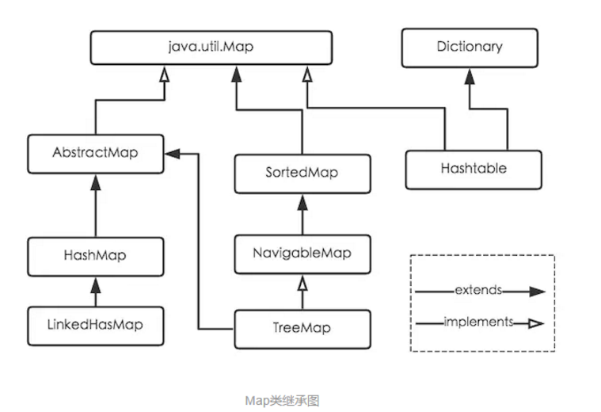
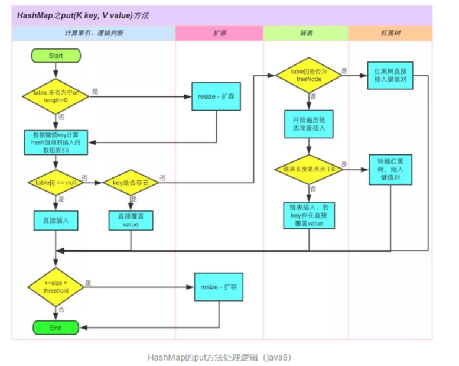
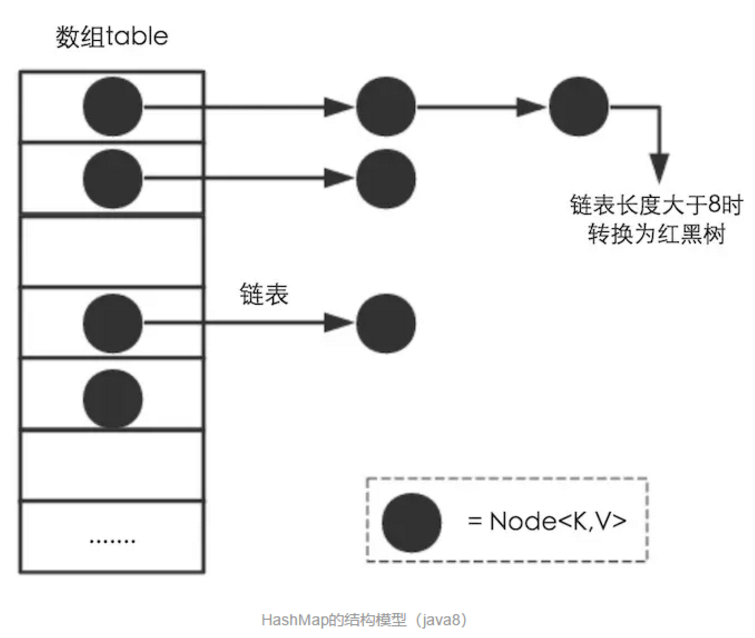
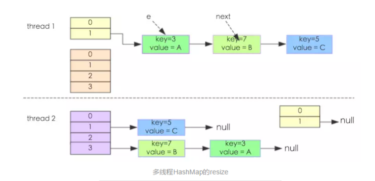
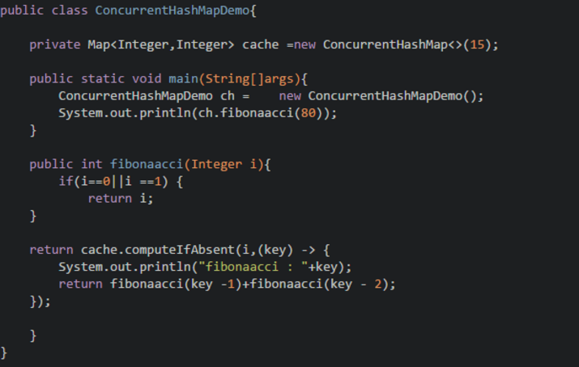

- 为什么用HashMap？
- 简述一下Map类继承关系？
- 解决哈希冲突的方法？
- 为什么HashMap线程不安全？
- resize机制？
- HashMap的工作原理是什么？
- 有什么方法可以减少碰撞？
- HashMap中hash函数怎么是是实现的?
- 拉链法导致的链表过深问题为什么不用二叉查找树代替，而选择红黑树？为什么不一直使用红黑树？
- 说说你对红黑树的见解？
- 解决hash 碰撞还有那些办法？
- 如果HashMap的大小超过了负载因子(load factor)定义的容量，怎么办？
- 重新调整HashMap大小存在什么问题吗？
- HashTable
- HashMap ，HashTable 区别
- ConcurrentHashMap 原理
我们可以使用CocurrentHashMap来代替Hashtable吗？
现在是晚上11点了，学校屠猪馆的自习室因为太晚要关闭了，勤奋且疲惫的小鲁班也从屠猪馆出来了，正准备回宿舍洗洗睡，由于自习室位置比较偏僻所以是接收不到手机网络信号的，因此小鲁班从兜里掏出手机的时候，信息可真是炸了呀，小鲁班心想，微信群平时都没什么人聊天，今晚肯定是发生了什么大事，仔细一看，才发现原来是小鲁班的室友达摩（光头）拿到了阿里巴巴JAVA开发实习生的offer，此时小鲁班真替他室友感到高兴的同时，心里也难免会产生一丝丝的失落感，那是因为自己投了很多份简历，别说拿不拿得到offer，就连给面试邀的公司也都寥寥无几，小鲁班这会可真是受到了一万点真实暴击，不过小鲁班还是很乐观的，很快调整了心态，带上耳机，慢慢的走回了宿舍，正打算准备向他那神室友达摩取取经。
片刻后~
1.为什么用HashMap？
HashMap是一个散列桶（数组和链表），它存储的内容是键值对(key-value)映射
HashMap采用了数组和链表的数据结构，能在查询和修改方便继承了数组的线性查找和链表的寻址修改
HashMap是非synchronized，所以HashMap很快
HashMap可以接受null键和值，而Hashtable则不能（原因就是equlas()方法需要对象，因为HashMap是后出的API经过处理才可以）
2.简述一下Map类继承关系

上面展示了java中Map的继承图，Map是一个接口，我们常用的实现类有HashMap、LinkedHashMap、TreeMap，HashTable。HashMap根据key的hashCode值来保存value，需要注意的是，HashMap不保证遍历的顺序和插入的顺序是一致的。HashMap允许有一条记录的key为null，但是对值是否为null不做要求。HashTable类是线程安全的，它使用synchronize来做线程安全，全局只有一把锁，在线程竞争比较激烈的情况下hashtable的效率是比较低下的。因为当一个线程访问hashtable的同步方法时，其他线程再次尝试访问的时候，会进入阻塞或者轮询状态，比如当线程1使用put进行元素添加的时候，线程2不但不能使用put来添加元素，而且不能使用get获取元素。所以，竞争会越来越激烈。相比之下，ConcurrentHashMap使用了分段锁技术来提高了并发度，不在同一段的数据互相不影响，多个线程对多个不同的段的操作是不会相互影响的。每个段使用一把锁。所以在需要线程安全的业务场景下，推荐使用ConcurrentHashMap，而HashTable不建议在新的代码中使用，如果需要线程安全，则使用ConcurrentHashMap，否则使用HashMap就足够了。
LinkedHashMap属于HashMap的子类，与HashMap的区别在于LinkedHashMap保存了记录插入的顺序。TreeMap实现了SortedMap接口，TreeMap有能力对插入的记录根据key排序，默认按照升序排序，也可以自定义比较强，在使用TreeMap的时候，key应当实现Comparable。
3. HashMap的工作原理是什么？
java7和java8在实现HashMap上有所区别，当然java8的效率要更好一些，主要是java8的HashMap在java7的基础上增加了红黑树这种数据结构，使得在桶里面查找数据的复杂度从O(n)降到O(logn)，当然还有一些其他的优化，比如resize的优化等。
HashMap是基于hashing的原理，我们使用put(key, value)存储对象到HashMap中，使用get(key)从HashMap中获取对象。当我们给put()方法传递键和值时，我们先对键调用hashCode()方法，计算并返回的hashCode是用于找到Map数组的bucket位置来储存Node 对象。这里关键点在于指出，HashMap是在bucket中储存键对象和值对象，作为Map.Node 。
Node<K,V>就是实际保存我们的key-value对的数据结构，下面是这个数据结构的主要内容：
final int hash;
final K key;
V value;
Node<K,V> next;
以下是HashMap初始化 ，简单模拟数据结构
以下是具体的put过程（JDK1.8版）

如果链表长度超过阀值( TREEIFY THRESHOLD==8)，就把链表转成红黑树，链表长度低于6，就把红黑树转回链表

如果桶满了(容量16*加载因子0.75)，就需要 resize（扩容2倍后重排），直到设定的最大值之后就无法再resize了
以下是具体get过程(考虑特殊情况如果两个键的hashcode相同，你如何获取值对象？)
当我们调用get()方法，HashMap会使用键对象的hashcode找到bucket位置，找到bucket位置之后，会调用keys.equals()方法去找到链表中正确的节点，最终找到要找的值对象。
4.解决哈希冲突的方法？
5.resize机制
HashMap的扩容机制就是重新申请一个容量是当前的2倍的桶数组，然后将原先的记录逐个重新映射到新的桶里面，然后将原先的桶逐个置为null使得引用失效。后面会讲到，HashMap之所以线程不安全，就是resize这里出的问题。
6.为什么HashMap线程不安全
上面说到，HashMap会进行resize操作，在resize操作的时候会造成线程不安全。下面将举两个可能出现线程不安全的地方。
下面的代码是resize的核心内容：
void transfer(Entry[] newTable, boolean rehash) {
int newCapacity = newTable.length;
for (Entry<K,V> e : table) {
while(null != e) {
Entry<K,V> next = e.next;
if (rehash) {
e.hash = null == e.key ? 0 : hash(e.key);
}
int i = indexFor(e.hash, newCapacity);
e.next = newTable[i];
newTable[i] = e;
e = next;
}
}
}
这个方法的功能是将原来的记录重新计算在新桶的位置，然后迁移过去。

我们假设有两个线程同时需要执行resize操作，我们原来的桶数量为2，记录数为3，需要resize桶到4，原来的记录分别为：[3,A],[7,B],[5,C]，在原来的map里面，我们发现这三个entry都落到了第二个桶里面。
假设线程thread1执行到了transfer方法的Entry next = e.next这一句，然后时间片用完了，此时的e = [3,A], next = [7,B]。线程thread2被调度执行并且顺利完成了resize操作，需要注意的是，此时的[7,B]的next为[3,A]。此时线程thread1重新被调度运行，此时的thread1持有的引用是已经被thread2 resize之后的结果。线程thread1首先将[3,A]迁移到新的数组上，然后再处理[7,B]，而[7,B]被链接到了[3,A]的后面，处理完[7,B]之后，就需要处理[7,B]的next了啊，而通过thread2的resize之后，[7,B]的next变为了[3,A]，此时，[3,A]和[7,B]形成了环形链表，在get的时候，如果get的key的桶索引和[3,A]和[7,B]一样，那么就会陷入死循环。
如果在取链表的时候从头开始取（现在是从尾部开始取）的话，则可以保证节点之间的顺序，那样就不存在这样的问题了。
综合上面两点，可以说明HashMap是线程不安全的。
7. 有什么方法可以减少碰撞？
8. HashMap中hash函数怎么是是实现的?
9. 说说你对红黑树的见解？
10. 解决hash 碰撞还有那些办法？
开放定址法。
当冲突发生时，使用某种探查技术在散列表中形成一个探查(测)序列。沿此序列逐个单元地查找，直到找到给定的地址。
按照形成探查序列的方法不同，可将开放定址法区分为线性探查法、二次探查法、双重散列法等。
问题：已知一组关键字为(26，36，41，38，44，15，68，12，06，51)，用除余法构造散列函数，用线性探查法解决冲突构造这组关键字的散列表。
前5个关键字插入时，其相应的地址均为开放地址，故将它们直接插入T[0]，T[10)，T[2]，T[12]和T[5]中。
当插入第6个关键字15时，其散列地址2(即h(15)=15％13=2)已被关键字41(15和41互为同义词)占用。故探查h1=(2+1)％13=3，此地址开放，所以将15放入T[3]中。
当插入第7个关键字68时，其散列地址3已被非同义词15先占用，故将其插入到T[4]中。
当插入第8个关键字12时，散列地址12已被同义词38占用，故探查hl=(12+1)％13=0，而T[0]亦被26占用，再探查h2=(12+2)％13=1，此地址开放，可将12插入其中。
类似地，第9个关键字06直接插入T[6]中；而最后一个关键字51插人时，因探查的地址12，0，1，…，6均非空，故51插入T[7]中。
11. 如果HashMap的大小超过了负载因子(load factor)定义的容量，怎么办？
默认的负载因子大小为0.75，也就是说，当一个map填满了75%的bucket时候，和其它集合类(如ArrayList等)一样，将会创建原来HashMap大小的两倍的bucket数组，来重新调整map的大小，并将原来的对象放入新的bucket数组中。这个过程叫作rehashing，因为它调用hash方法找到新的bucket位置。这个值只可能在两个地方，一个是原下标的位置，另一种是在下标为<原下标+原容量>的位置
12. 重新调整HashMap大小存在什么问题吗？
当重新调整HashMap大小的时候，确实存在条件竞争，因为如果两个线程都发现HashMap需要重新调整大小了，它们会同时试着调整大小。在调整大小的过程中，存储在链表中的元素的次序会反过来，因为移动到新的bucket位置的时候，HashMap并不会将元素放在链表的尾部，而是放在头部，这是为了避免尾部遍历(tail traversing)。如果条件竞争发生了，那么就死循环了。(多线程的环境下不使用HashMap）
HashMap的容量是有限的。当经过多次元素插入，使得HashMap达到一定饱和度时，Key映射位置发生冲突的几率会逐渐提高。这时候，HashMap需要扩展它的长度，也就是进行Resize。
扩容：创建一个新的Entry空数组，长度是原数组的2倍。
13. HashTable
数组 + 链表方式存储
默认容量： 11(质数 为宜)
put:
14. HashMap ，HashTable 区别
默认容量不同。扩容不同
线程安全性，HashTable 安全
效率不同 HashTable 要慢因为加锁
15. ConcurrentHashMap 原理
1、最大特点是引入了 CAS（借助 Unsafe 来实现【native code】）
CAS有3个操作数：
当且仅当预期值A和内存值V相同时，将内存值V修改为B，否则什么都不做。
Unsafe 借助 CPU 指令 cmpxchg 来实现
使用实例：
-1 代表table正在初始化
N 表示有 -N-1 个线程正在进行扩容操作
如果table未初始化，表示table需要初始化的大小。
如果table初始化完成，表示table的容量，默认是table大小的0.75倍，居然用这个公式算0.75（n - (n >>> 2)）。
CAS 会出现的问题：ABA
对变量增加一个版本号，每次修改，版本号加 1，比较的时候比较版本号。
16. 我们可以使用CocurrentHashMap来代替Hashtable吗？
我们知道Hashtable是synchronized的，但是ConcurrentHashMap同步性能更好，因为它仅仅根据同步级别对map的一部分进行上锁。ConcurrentHashMap当然可以代替HashTable，但是HashTable提供更强的线程安全性。它们都可以用于多线程的环境，但是当Hashtable的大小增加到一定的时候，性能会急剧下降，因为迭代时需要被锁定很长的时间。因为ConcurrentHashMap引入了分割(segmentation)，不论它变得多么大，仅仅需要锁定map的某个部分，而其它的线程不需要等到迭代完成才能访问map。简而言之，在迭代的过程中，ConcurrentHashMap仅仅锁定map的某个部分，而Hashtable则会锁定整个map。
见此不太妙：小鲁班立马回到床上（泉水），把被子盖过头，心里有一丝丝愉悦感，不对。好像还没洗澡。。。
CocurrentHashMap在JAVA8中存在一个bug，会进入死循环，原因是递归创建ConcurrentHashMap 对象，但是在1.9已经修复了,场景重现如下：

想了解更多面经和开发小技能，欢迎扫描下方的二维码，持续关注！